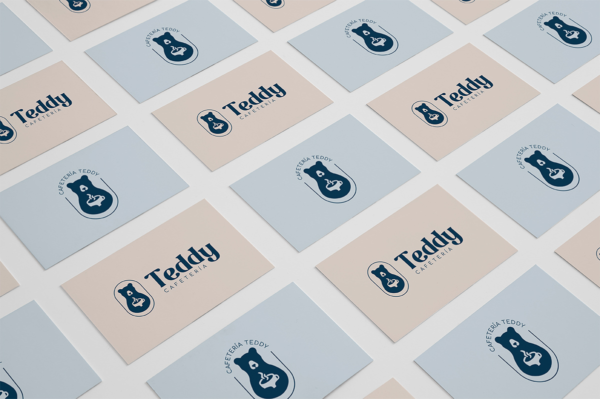
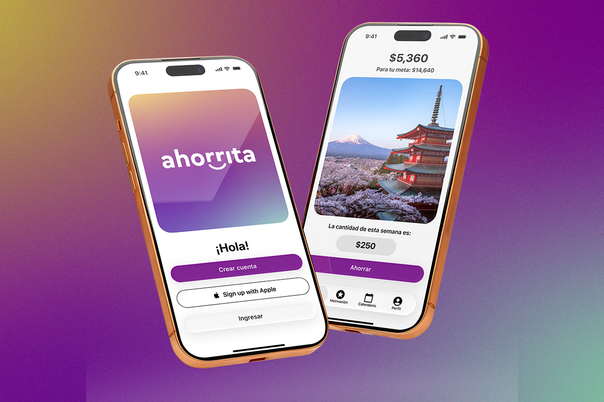
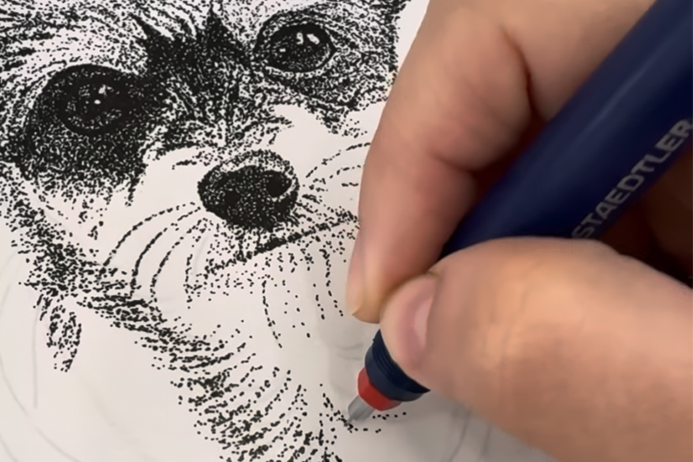

Branding y contenido visual

Marcas, piezas editoriales y contenido que he desarrollado para distintos proyectos.
Soy Verónica Olvera, Diseñadora Gráfica y UX/UI Jr :D
En este perfil nos encanta contar historias con el diseño y conectar con las personas, porque diseñar no es solo que se vea "bonito", es comunicar, es ser funcional y entender lo que el cliente quiere transmitir.
Conoce mi trabajo →
Marcas, piezas editoriales y contenido que he desarrollado para distintos proyectos.

Mis primeros proyectos de UX/UI, desde la idea y la estructura hasta las pantallas y prototipos.

Un poco sobre mí, mi forma de trabajar y las cosas que me inspiran a seguir aprendiendo.